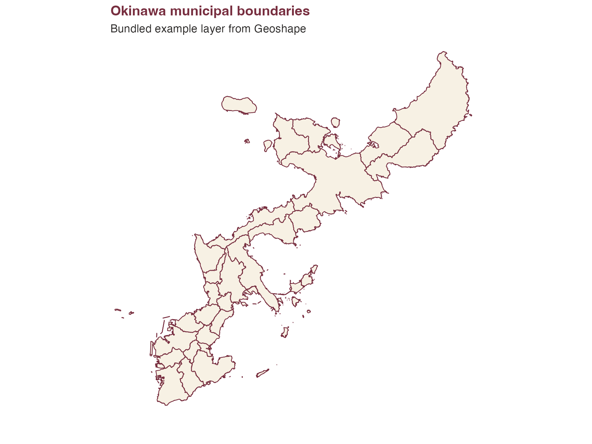
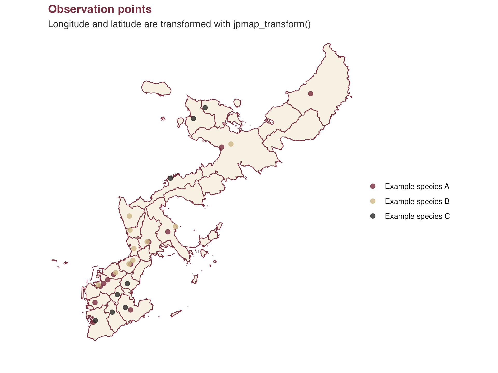
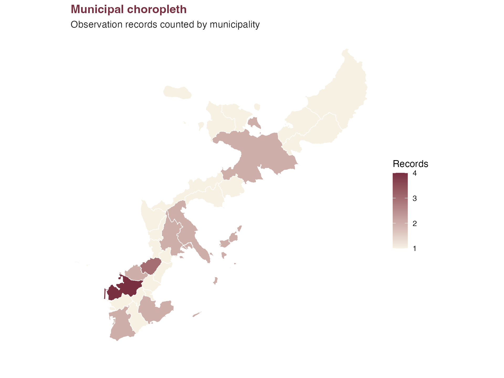
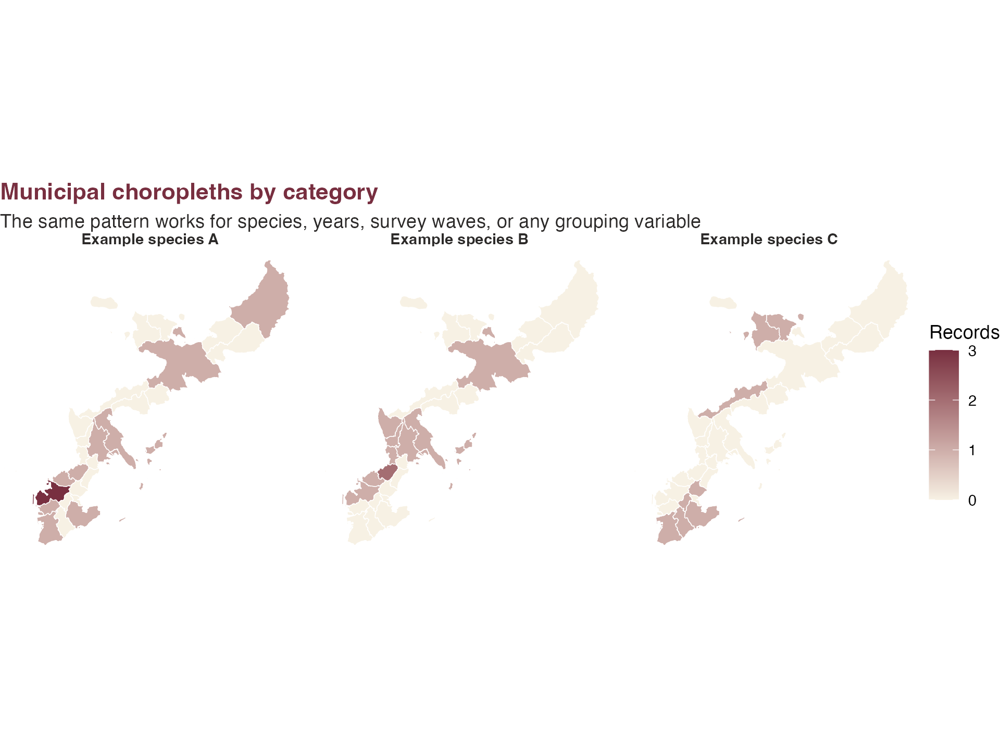

This article shows the basic workflow for observation-style data: draw municipal boundaries, count records by municipality, make a choropleth, and add longitude/latitude points. The example records below are synthetic.
library(ggplot2)
library(jpmap)
example_data_dir <- system.file("extdata", package = "jpmap")
okinawa_municipalities <- jp_map(
"municipalities",
include = "Okinawa",
data_year = 2021,
data_dir = example_data_dir,
inset = FALSE
)
observations <- data.frame(
species = c(
rep("Example species A", 12),
rep("Example species B", 10),
rep("Example species C", 8)
),
municipality = c(
"Naha", "Naha", "Naha", "Urasoe", "Ginowan", "Tomigusuku",
"Itoman", "Nanjo", "Okinawa", "Uruma", "Nago", "Kunigami",
"Naha", "Urasoe", "Ginowan", "Ginowan", "Chatan", "Kadena",
"Yomitan", "Okinawa", "Uruma", "Nago",
"Itoman", "Nanjo", "Yaese", "Haebaru", "Nishihara", "Onna",
"Motobu", "Nakijin"
),
lon = c(
127.681, 127.690, 127.700, 127.715, 127.760, 127.670,
127.670, 127.770, 127.805, 127.855, 127.985, 128.220,
127.675, 127.720, 127.755, 127.765, 127.765, 127.750,
127.745, 127.800, 127.875, 128.010,
127.675, 127.755, 127.720, 127.730, 127.755, 127.850,
127.900, 127.930
),
lat = c(
26.212, 26.220, 26.230, 26.245, 26.275, 26.170,
26.120, 26.160, 26.335, 26.365, 26.590, 26.745,
26.215, 26.250, 26.275, 26.285, 26.315, 26.360,
26.395, 26.335, 26.380, 26.600,
26.125, 26.165, 26.150, 26.195, 26.225, 26.500,
26.655, 26.685
),
stringsAsFactors = FALSE
)
observations_xy <- jpmap_transform(
observations,
output_names = c("x", "y"),
inset = FALSE
)
okinawa_view <- jpmap_transform(
data.frame(
lon = c(127.55, 128.35, 127.55, 128.35),
lat = c(26.05, 26.05, 26.85, 26.85)
),
output_names = c("x", "y"),
inset = FALSE
)Municipal Boundaries
ggplot(okinawa_municipalities) +
geom_sf(fill = "#F7F1E4", color = "white", linewidth = 0.25) +
geom_sf(fill = NA, color = "#782F40", linewidth = 0.35) +
coord_sf(
crs = jpmap_crs(),
xlim = range(okinawa_view$x),
ylim = range(okinawa_view$y),
expand = FALSE,
datum = NA
) +
labs(
title = "Okinawa municipal boundaries",
subtitle = "Bundled example layer from Geoshape"
) +
theme_void() +
theme(
plot.background = element_rect(fill = "white", color = NA),
panel.background = element_rect(fill = "white", color = NA),
plot.title = element_text(face = "bold", color = "#782F40"),
plot.subtitle = element_text(color = "#2C2A29")
)
Point Map
ggplot(okinawa_municipalities) +
geom_sf(fill = "#F7F1E4", color = "white", linewidth = 0.25) +
geom_sf(fill = NA, color = "#782F40", linewidth = 0.35) +
geom_point(
data = observations_xy,
aes(x = x, y = y, color = species),
size = 2.2,
alpha = 0.8
) +
scale_color_manual(
values = c(
"Example species A" = "#782F40",
"Example species B" = "#CEB888",
"Example species C" = "#2C2A29"
),
name = NULL
) +
coord_sf(
crs = jpmap_crs(),
xlim = range(okinawa_view$x),
ylim = range(okinawa_view$y),
expand = FALSE,
datum = NA
) +
labs(
title = "Observation points",
subtitle = "Longitude and latitude are transformed with jpmap_transform()"
) +
theme_void() +
theme(
plot.background = element_rect(fill = "white", color = NA),
panel.background = element_rect(fill = "white", color = NA),
legend.background = element_rect(fill = "white", color = NA),
plot.title = element_text(face = "bold", color = "#782F40"),
plot.subtitle = element_text(color = "#2C2A29"),
legend.position = "right"
)
Municipal Counts
municipality_counts <- aggregate(
list(records = observations$species),
observations["municipality"],
length
)
counts_map <- jp_map(
"municipalities",
include = "Okinawa",
data_year = 2021,
data_dir = example_data_dir,
inset = FALSE
)
counts_map <- jp_map_with_data(counts_map, municipality_counts, values = "records")
ggplot(counts_map) +
geom_sf(aes(fill = records), color = "white", linewidth = 0.25) +
coord_sf(
crs = jpmap_crs(),
xlim = range(okinawa_view$x),
ylim = range(okinawa_view$y),
expand = FALSE,
datum = NA
) +
scale_fill_gradient(
low = "#F7F1E4",
high = "#782F40",
na.value = "#F7F1E4",
name = "Records"
) +
labs(
title = "Municipal choropleth",
subtitle = "Observation records counted by municipality"
) +
theme(
plot.background = element_rect(fill = "white", color = NA),
panel.background = element_rect(fill = "white", color = NA),
legend.background = element_rect(fill = "white", color = NA),
plot.title = element_text(face = "bold", color = "#782F40"),
plot.subtitle = element_text(color = "#2C2A29")
)
Faceted Counts
species_counts <- aggregate(
list(records = observations$species),
observations[c("species", "municipality")],
length
)
species_maps <- lapply(unique(observations$species), function(species) {
counts <- species_counts[species_counts$species == species, ]
map <- okinawa_municipalities
map$species <- species
map$records <- counts$records[match(map$municipality, counts$municipality)]
map$records[is.na(map$records)] <- 0L
map
})
species_maps <- do.call(rbind, species_maps)
ggplot(species_maps) +
geom_sf(aes(fill = records), color = "white", linewidth = 0.2) +
coord_sf(
crs = jpmap_crs(),
xlim = range(okinawa_view$x),
ylim = range(okinawa_view$y),
expand = FALSE,
datum = NA
) +
facet_wrap(~species) +
scale_fill_gradient(
low = "#F7F1E4",
high = "#782F40",
name = "Records"
) +
labs(
title = "Municipal choropleths by category",
subtitle = "The same pattern works for species, years, survey waves, or any grouping variable"
) +
theme_void() +
theme(
plot.background = element_rect(fill = "white", color = NA),
panel.background = element_rect(fill = "white", color = NA),
strip.text = element_text(face = "bold", color = "#2C2A29"),
legend.background = element_rect(fill = "white", color = NA),
plot.title = element_text(face = "bold", color = "#782F40"),
plot.subtitle = element_text(color = "#2C2A29")
)
For full nationwide municipal data, build from the official MLIT N03 source:
jpmap_build_data(year = 2024)For a single-prefecture workflow like many local observation projects, build only that prefecture:
jpmap_build_data(year = 2024, prefecture = "Ehime")